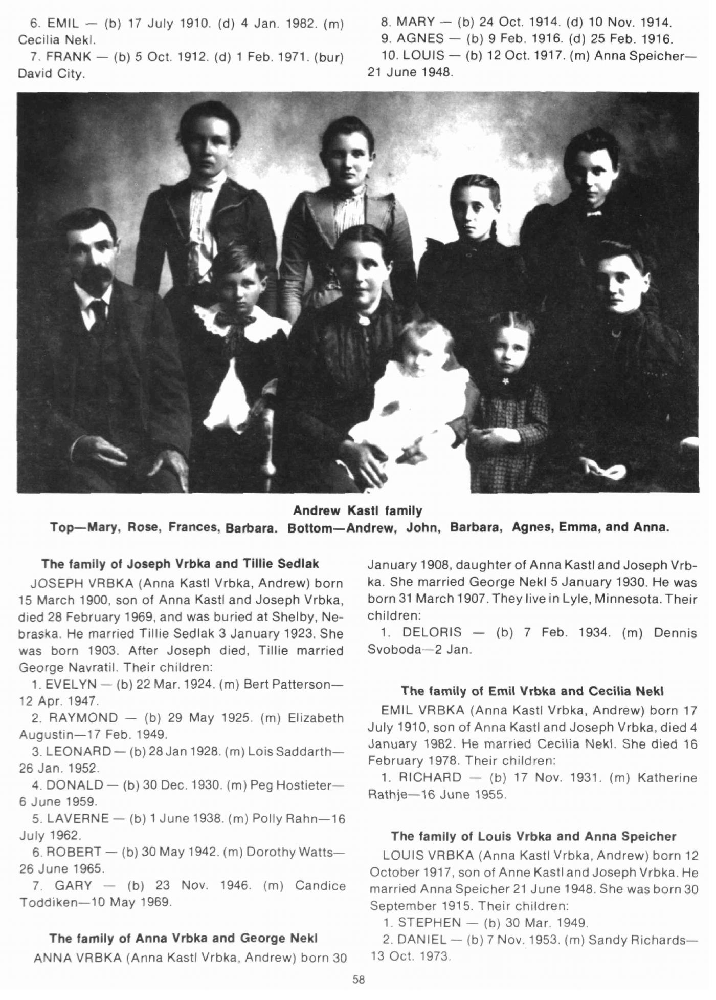

The book · The Family of Andrew Kastl
Page 58 The family of Joseph Vrbka and Tillie Sedlak


Transcription
- EMIL — (b) 17 July 1910. (d) 4 Jan. 1982. (m) Cecilia Nekl.
- FRANK — (b) 5 Oct. 1912. (d) 1 Feb. 1971. (bur) David City.
- MARY — (b) 24 Oct. 1914. (d) 10 Nov. 1914.
- AGNES — (b) 9 Feb. 1916. (d) 25 Feb. 1916.
- LOUIS — (b) 12 Oct. 1917. (m) Anna Speicher—21 June 1948.

The family of Joseph Vrbka and Tillie Sedlak
JOSEPH VRBKA (Anna Kastl Vrbka, Andrew) born 15 March 1900, son of Anna Kastl and Joseph Vrbka, died 28 February 1969, and was buried at Shelby, Nebraska. He married Tillie Sedlak 3 January 1923. She was born 1903. After Joseph died, Tillie married George Navratil. Their children:
- EVELYN — (b) 22 Mar. 1924. (m) Bert Patterson—12 Apr. 1947.
- RAYMOND — (b) 29 May 1925. (m) Elizabeth Augustin—17 Feb. 1949.
- LEONARD — (b) 28 Jan 1928. (m) Lois Saddarth—26 Jan. 1952.
- DONALD — (b) 30 Dec. 1930. (m) Peg Hostieter—6 June 1959.
- LAVERNE — (b) 1 June 1938. (m) Polly Rahn—16 July 1962.
- ROBERT — (b) 30 May 1942. (m) Dorothy Watts—26 June 1965.
- GARY — (b) 23 Nov. 1946. (m) Candice Toddiken—10 May 1969.
The family of Anna Vrbka and George Nekl
ANNA VRBKA (Anna Kastl Vrbka, Andrew) born 30 January 1908, daughter of Anna Kastl and Joseph Vrbka. She married George Nekl 5 January 1930. He was born 31 March 1907. They live in Lyle, Minnesota. Their children:
- DELORIS — (b) 7 Feb. 1934. (m) Dennis Svoboda—2 Jan.
The family of Emil Vrbka and Cecilia Nekl
EMIL VRBKA (Anna Kastl Vrbka, Andrew) born 17 July 1910, son of Anna Kastl and Joseph Vrbka, died 4 January 1982. He married Cecilia Nekl. She died 16 February 1978. Their children:
- RICHARD — (b) 17 Nov. 1931. (m) Katherine Rathje—16 June 1955.
The family of Louis Vrbka and Anna Speicher
LOUIS VRBKA (Anna Kastl Vrbka, Andrew) born 12 October 1917, son of Anne Kastl and Joseph Vrbka. He married Anna Speicher 21 June 1948. She was born 30 September 1915. Their children:
- STEPHEN — (b) 30 Mar. 1949.
- DANIEL — (b) 7 Nov. 1953. (m) Sandy Richards—13 Oct. 1973.
Transcriber’s notes
Page opens with items 6-10 of the children of Anna Kastl and Joseph Vrbka (heading on p.57); the list continues across both columns above the photo. Caption is two lines (title line, then names); joined with ' / ' in frontmatter. The Anna Vrbka and George Nekl entry runs from the foot of the left column to the top of the right column ('born 30' / 'January 1908'); joined. Item 1 DELORIS marriage date printed incomplete ('Svoboda—2 Jan.'). '28 Jan 1928' without period, 'Anne Kastl' in Louis Vrbka entry, as printed. The Louis Vrbka / Anna Speicher child list continues on p.59 (items 3 SARA, 4 MARILEE).